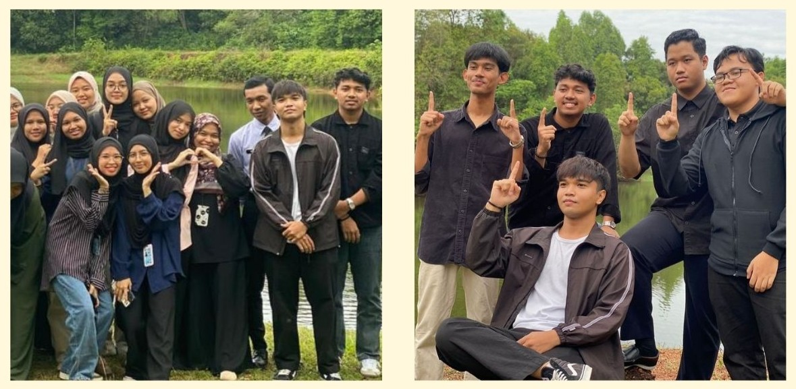
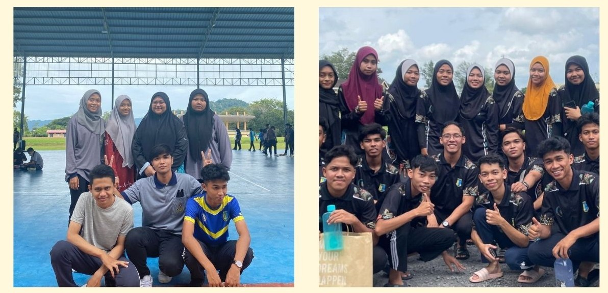
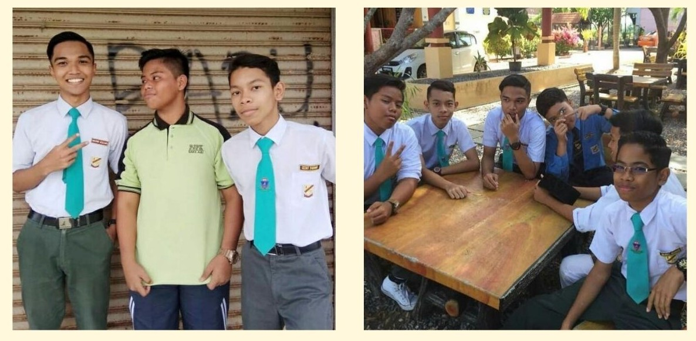
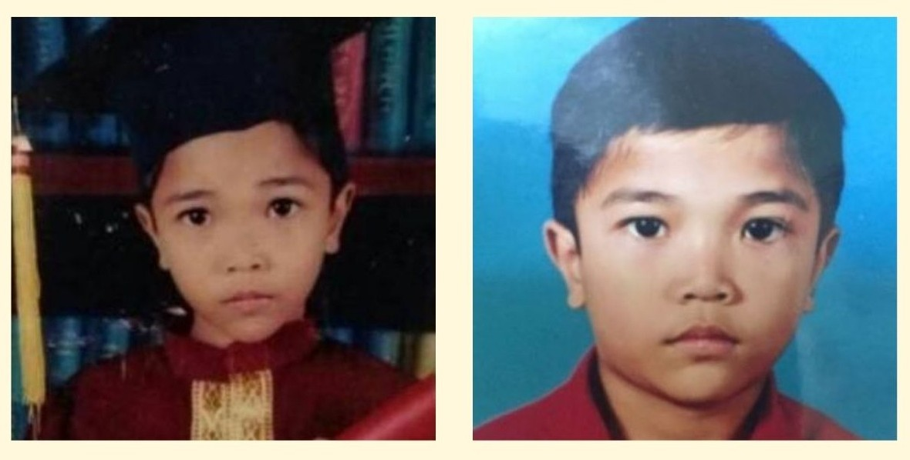

Education
Education is the process of facilitating learning or the acquisition of knowledge and skills.
It typically provided by schools, colleges, universities and other educational institutions.
Degree (2023-Present)

Bachelor of Information Science (HONS) in Library Management, UiTM Kedah
Malaysian Higher School Certificate (STPM) (2021-2022)

Social Science Stream, SMK Syed Hassan
Secondary School (2016-2020)

Completed Pentaksiran Tingkatan 3 (PT3) and Sijil Pelajaran Malaysia (SPM), SMK Abi
Primary School (2010-2015)

Completed Ujian Pencapaian Sekolah Rendah (UPSR), SK Sena
Copyright © 2025 Izzairi Roslan